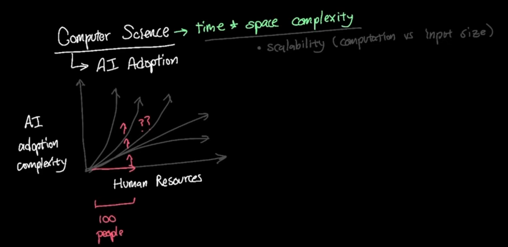
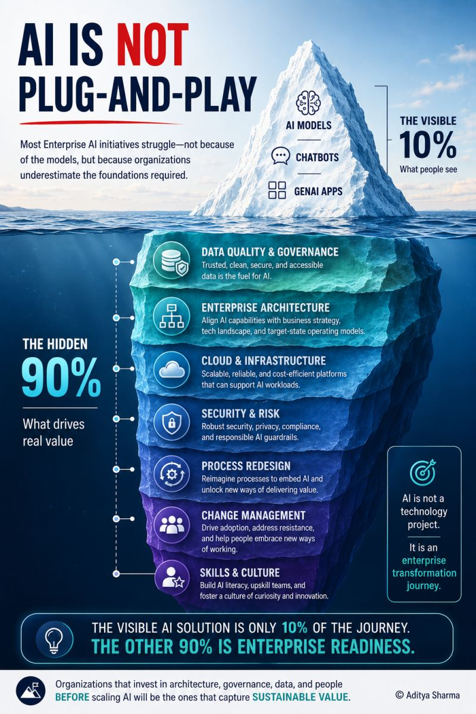
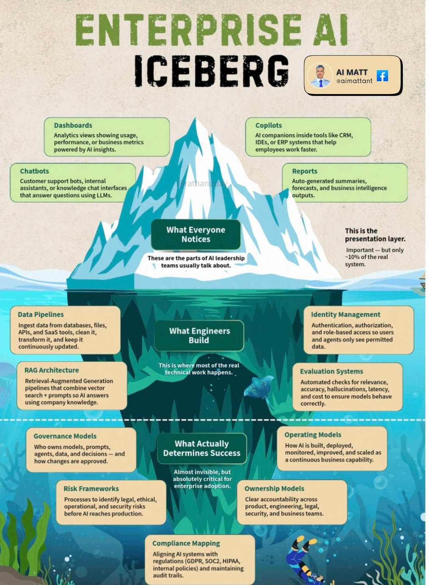

企业 AI 落地：
误区、行动与 ROI
不是让员工多用一个工具，而是重新设计工作、流程与组织。
→
REDESIGN
从认识 AI，
走到企业落地。
先理解问题，再选择场景，最后把能力放进真实工作。
01 / 基础与方法
02 / 典型误区与企业能力
03 / 场景与工具
04 / 价值与生产
05 / 成本、总结与策略

Wade 邓维
MaybeAI 联创 & 技术负责人
帮助过多家年营收几千万到亿的跨境电商企业落地 AI。
不要重复解释，
把经验沉淀成 可复用的 Skill。
一条成功路径只有被记录、验证、迭代，才会从个人技巧变成团队能力。
从真实对话开始
汇总 Chat History、经验总结和失败案例，保留输入、判断、修改与最终结果。
找出稳定的任务模式
明确任务目标、必要输入、判断标准、输出格式，以及哪些情况不能自动处理。
把流程写成可执行步骤
写清触发条件、执行顺序、工具权限、边界条件和需要人工确认的节点。
用失败案例迭代
用代表性案例做 Eval，记录失败原因、修复方式和版本变化，避免问题重复发生。
Skill 最少要写清楚
让使用者知道什么时候调用，也让系统知道什么时候停下来。
- 触发条件 / 什么时候使用
- 输入与步骤 / 需要什么、怎么做
- 输出与验收 / 交付什么、怎样算合格
- 边界与回退 / 不能做什么、何时找人
Skill 不是孤立的 Prompt，
它必须嵌入 真实企业流程。
换一个企业，
结果可能完全不同。
目标、角色、数据、权限、系统和责任边界变了，Skill 的输入、输出和风险也会跟着变化。
要改善什么指标？
节省时间、降低成本，还是提升质量与收入？
谁使用、谁负责？
明确使用者、最终判断人和结果验收人。
模型可以看到什么？
定义数据边界、脱敏要求和可调用的系统权限。
输出接下来去哪？
明确交接系统、后续动作和异常处理路径。
什么时候必须停下？
设定人工审核、准确率、延迟与合规要求。
AI 转型的前沿，
不是“给旧公司装 AI”。
岗位 → 流程 → 工具
走向
目标 → 人 / Agent → 结果
如果智能可以被复制，公司最小的经营单位会不会改变？
人可能成为系统可调用的一种能力。管理也从“忙不忙”转向“结果、Eval、失败与反馈”。
真正的终局，是用 AI 重新思考“公司”这一组织形态。06
试点能跑通，
为什么一推广就失灵？

局部成功，整体失败
单条产线、单个部门看起来有效，推广到全公司后，数据、流程、人员和权责不再匹配。
技术做加法，流程原地走
只把 AI 贴在旧流程上，没有删除冗余、打破壁垒或重新划分人机分工。
个体省时间，财务无结果
员工确实更快了，但时间没有流向高价值工作，营收、成本和周期仍然没有改变。
试点可以很漂亮，
价值却可能没有发生。
当成“创造价值”。
真正要追问的不是模型能不能回答，而是它有没有改变营收、成本、周期、质量或组织能力。
试点能成功，推广就失灵
换到更多部门后，数据、流程、人员和权责不再匹配。
技术做加法，流程原地走
旧流程没有重构，AI 只是贴在系统表面的新工具。
个体有效率，组织无效益
员工省下时间，却没有流向高价值工作，财务结果看不见。
技术指标漂亮，商业指标缺席
使用率、参数和覆盖率很亮眼，却说不清收入、成本和周期。
AI 的价值上限，
常常由 流程重构 决定。
如果只是把 AI 接到旧流程上，效率提升会被冗余、等待和重复审批重新吃掉。
在旧流程上叠加 AI
- 目标让某个岗位更快完成一个任务
- 流程输入、审批、交接和系统边界保持不变
- 结果局部效率变高，整体周期和成本不变
- 风险AI 变成新的孤岛，越用越复杂
围绕目标重写工作
- 目标先定义要改善的业务指标
- 流程删除冗余、合并重复，重新划分人机分工
- 结果让时间、质量或收入真正进入经营结果
- 边界人保留判断、决策、创新和异常处理
每个 AI 项目，
都要走完一条 价值闭环。
锚定价值
只选择一个核心业务目标，并由业务负责人验收。
重构流程
删除冗余，明确人机分工，不给旧流程贴补丁。
建立核算
上线前估算，上线后实测，规模化后纳入经营分析。
小步试点
先在最小业务单元验证，稳定后再逐步放量。
标准化
把模型、数据、流程、权限和运维做成可复制组件。
人机协同
AI 增强判断与创造，不把员工只当成可替代成本。
及时叫停
达不到价值、无法复制或只适合演示，就停止投入。
AI 会替代一部分工作，不等于一键替代一个人。
以为 AI 很快就可以取代人
模型能力增长很快，于是从“AI 能做一部分工作”，直接跳到“这个岗位是不是可以不要了”。
真正落地时，岗位背后还有任务拆解、流程、数据、权限、验收、责任和异常处理。
做出一个 ChatGPT Demo，
离完成还很远。
某一次输入，得到了一个不错的答案
AI 能不能给出一个看起来不错的答案？
真实输入进来以后，能不能稳定、重复、可验收地交付？
Codex 跑出了 Demo，
不代表系统可以稳定上线。
代码生成快，生产系统就会快
很快得到能跑的代码和可演示的路径，适合验证想法与拿到反馈。
测试、边界、监控、权限、异常处理、数据一致性、回滚和长期维护都要补齐。
不要把核心判断，
直接外包给 LLM。
输出很像人，事实却可能不成立
事实、数字、权限、法律、财务和业务规则，都不能只靠模型输出。
AI 可以承担重复方法，但高风险判断、最终责任和授权边界仍然需要人。
很多“做不到”，其实是任务没有拆对。
而是把一个太大的任务直接扔给 AI
输入缺失、任务过大、模式不匹配、模型不适合，或者验收标准模糊。
把复杂任务拆成目标、子任务、输入、规则、输出和验收，再逐步验证。

AI 不是又一个功能，
而是一项企业能力。
AI 能力只是可见的 10%；真正驱动价值的，是水面下的企业准备度。
可靠数据、可扩展基础设施、治理、安全、有效模型与专业人才。
数据质量不足与组织准备度不够，往往比模型本身更先卡住项目。
把 AI 对齐业务目标、技术现状与目标运营模型，避免孤立建设。
推动采用、建立信任，让新能力真正进入日常工作。

用户看到的只是展示层，
真正的工作在水面之下。
AI 看起来很小，直到真实用户开始点击。规模化依赖的不只是模型，而是完整的工程、治理与运营体系。
Dashboard、Copilot、Chatbot、报告，是大家最先看到的 10%。
数据管道、RAG、身份管理与评测系统，支撑真实任务稳定运行。
治理模型、风险框架、合规映射，定义谁负责、如何审批与如何追溯。
运营模型与责任模型，让 AI 能持续部署、监控、改进并扩大。
从工作痕迹开始，
找一件值得验证的事。
把场景写成一句话
把 A 变成 B，交给 C。
再决定技术
AI、Workflow、固定程序，还是人机组合？
选错场景，往往是 AI 项目失败的第一原因。
先看数据有没有积累
优先选择已有结构化沉淀的场景，而不是从零收集数据。数据质量决定 AI 效果上限。
✓ IoT 传感器已部署
× 大量纸质单据
先设可量化的北极星指标
“减少 30% 人工坐席”可以考核；“提升体验”无法验收。目标模糊，项目就容易烂尾。
✓ 能耗下降 · OEE 提升
× 优化流程
先解决高频人工重复劳动
高频率、规则明确的工作，是 AI 最擅长、ROI 最高的切入点。频率越高，节省的人力越可观。
✓ 数据录入 · 报告生成
× 高度个性化场景
选一个红星场景：
真实、可控、很快能跑出结果。
红星标准
有真实材料。风险可控。结果能在几周内被一个真实的人验收。
目的：最快获得外部反馈，而不是最快做出一个漂亮 Demo。
标准化越高，越容易做替代；决策越复杂，越可能放大人的能力。17
把流程拆开，
每一步选择最合适的能力。
输入输出确定、判断稳定。优先用程序，便宜、快、可测试。
步骤明确、要调用多个系统。用 Workflow 或 RPA。
自然语言、总结、分类、信息抽取。直接 Call LLM。
目标复杂、下一步取决于结果。再考虑 Agent。
真实业务通常是：程序 + Workflow + LLM + 人。预测型 AI 也不要默认用 LLM。
工具要跟着场景走，
再决定谁来用、怎么落地。
先定义价值，
再用三段核算追踪兑现结果。
先算清楚为什么做
明确痛点、业务负责人、目标指标和预计收益，没有价值目标就不立项。
核算实际改变了什么
用真实业务数据验证时间、成本、周期、质量或收入，不能只看使用率。
把项目结果放进经营
将多个场景的实际收益汇总，判断是否值得复制、扩张或停止投入。
验证假设
用最小业务单元验证真实输入、工作流和价值指标。
稳定交付
补齐权限、监控、验收和异常处理，持续记录真实结果。
复制或叫停
能复制就放量，不能复制或无价值就及时止损。
先让一个最小单元跑通，
再把结果变成可复制标准。
Input
真实输入从哪里来？格式是什么？缺什么就停。
Steps
每一步做什么？哪些步骤交给程序，哪些交给 AI？
Rules
权限、边界、例外和不能继续的条件。
Output
输出交给谁？格式、时效和可追溯性是什么？
Accept
什么叫完成？谁验收？失败如何记录和回滚？
别只问“用了什么模型”，
要问工作被怎样重新组织。
从一开始就重写工作，不背旧流程。
从一个真实场景切入，小步 POC。
进入设备、工艺、维修等物理流程。
重点从一个工具变成规模化工作单元。
模型放进真实业务系统，持续反馈。
不同路径对应不同 ROI，不能只比节省人数。
真正的企业 AI，不是接入一个大模型，而是把模型放进真实业务系统。22
AI 转型不是 IT 项目，
必须由业务和财务共同负责。
业务部门提出痛点、定义目标并承担验收责任。
把投入、收益和规模化结果纳入经营核算。
提供模型、数据、系统、权限和可运维的底座。
业务、IT、数据、法务和安全共同设计边界。
提前定义什么叫成功、失败和应该停止。
为流程重构、试错和持续迭代留出空间。
从一个业务目标开始，
走完验证、复制与止损。
只定一个目标
明确痛点、业务负责人和可量化的成功指标。
最小单元试点
用真实材料跑通工作流，记录结果和失败证据。
标准化再放量
把模型、数据、流程、权限和运维做成可复制组件。
不行就及时叫停
价值不成立、无法复制或只适合演示，就停止投入。
隐私控制不是一个开关，
要把模型规模和部署方式一起算。
| 方法 | 预计成本 | 优点 | 缺点 |
|---|---|---|---|
| 自部署模型 + vLLM | 30B：50-150 万/年 100B：100-300 万/年 DeepSeek 671B：400-1,000 万+/年 | 数据完全留在企业内部。隐私、权限、日志和部署策略可控。 | 初始投入和运维成本高。需要 GPU、网络、存储、安全和专业团队。 |
| 持续租用 GPU 部署模型 | 30B：1.5-2.2 万/月 100B：6.1-8.6 万/月 671B：24-34 万/月 约 18-413 万/年 | 不需要一次性购买硬件，可快速扩容，适合长期在线服务。 | 长期费用持续产生，依赖云平台 GPU 供应，仍需自行运维。 |
| 短期租用 Spot GPU | 约 10-20 元/GPU·小时 30B：10-20 元/小时 100B：40-80 元/小时 671B：160-320 元/小时 | 适合 POC、Benchmark、压测和临时任务，按小时付费。 | 机器可能被回收或中断，不适合稳定生产，需要自动恢复脚本。 |
| PII 脱敏网关 + 本地 30B + 外部 LLM | 首年约 20-40 万元 本地 GPU：1.5-2.2 万/月 x 12 加轻量网关和中等 API 用量 | 敏感任务先在本地处理，普通任务使用外部强模型，隐私和质量较平衡。 | 系统更复杂。PII 检测可能遗漏敏感信息，脱敏也可能损失上下文。 |
| 企业级可信 LLM | 首年约 20-200 万+ 按合同、席位和 API 用量变化 | 模型质量、SLA、审计、权限和合规支持通常更完整。 | 持续订阅费用较高，数据治理仍依赖供应商合同和实际执行。 |
| 模型规模 | GPU 规模与测试配置 | 纯 GPU 年成本 | 企业首年总成本估算 | 公开实测（按并发区分） |
|---|---|---|---|---|
| 30B | 最低约 1 x H100 生产建议 2-4 张 | 18-26 万元/张/年 | 约 50-150 万元 | 暂无同口径公开实测 规划参考：30-80 tokens/s |
| 约 100B | 最低约 4 x H100 生产建议 8 张左右 | 约 73-103 万元/年 | 约 100-300 万元 | 暂无同口径公开实测 规划参考：15-40 tokens/s |
| DeepSeek-V3 / R1 671B 总参数 公开实测：V3/R1 recipe | 成本基线：16 x H100 公开实测：8 x H200 / MI300X，FP8，TP=8 | 约 292-413 万元/年 16 张 H100 | 约 400-1,000 万元以上 | vLLM / C=1：61 tok/s SGLang / C=1：34.26 tok/s SGLang / C=100：463.80 tok/s 总吞吐 |
AI 落地不是多买一个工具，
而是重新设计工作。
用可验收的标准跑通一次。
再把结果复制到更多工作。
不要从 AI 能做什么开始，从公司每天在做什么开始。
许多失败来自问题、流程和验收没有设计好。
Token 不是全部成本，人、数据、流程和组织同样重要。
POC 成功不是上线成功，上线才是持续反馈的开始。
微调不是为了让模型知道更多，
而是让它在稳定任务上做得更一致。
重复量大、输入输出相对固定
适合分类、信息抽取、审核、格式转换等长期运行的同类任务。
已经积累高质量示例
有经过人工验收的输入 / 输出样本，并覆盖常见情况和边界情况。
需要固定风格和输出格式
希望模型稳定遵循术语、语气、字段结构或业务模板，Prompt 仍然不够稳定。
调用量大，成本或延迟需要下降
用更小的微调模型减少上下文、降低单次成本，或提升响应速度。